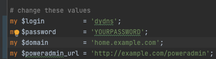

Note: This documentation is still in progress, not reviewed properly, and might contain some errors or outdated images. It's intended for the upcoming 4.0.0 release, so configuration settings might be different from previous versions.
Client Setup
Update Methods
The Dynamic DNS update system supports several ways to update records:
- HTTP Basic Authentication
- URL parameters
- Automatic IP detection
Supported Parameters
username- Your Poweradmin username (if not using HTTP Basic Auth)password- Your Poweradmin password (if not using HTTP Basic Auth)hostname- The FQDN to updatemyiporip- IPv4 address(es), comma-separatedmyip6orip6- IPv6 address(es), comma-separateddualstack_update- Set to 1 to update both IPv4 and IPv6verbose- Enable verbose response messages
Special Values
You can use whatismyip for the IP parameters to automatically detect your address:
curl "https://dns.example.com/dynamic_update.php?hostname=host.example.com&myip=whatismyip"
Multiple IP Management
The system supports managing multiple IP addresses per host:
# Update multiple IPv4 addresses
curl "https://dns.example.com/dynamic_update.php?hostname=host.example.com&myip=192.0.2.1,192.0.2.2"
# Update multiple IPv6 addresses
curl "https://dns.example.com/dynamic_update.php?hostname=host.example.com&myip6=2001:db8::1,2001:db8::2"
# Update both IPv4 and IPv6 with cleanup
curl "https://dns.example.com/dynamic_update.php?hostname=host.example.com&myip=192.0.2.1,192.0.2.2&myip6=2001:db8::1,2001:db8::2&dualstack_update=1"
When using multiple IPs:
- Omitted record types are preserved
- Use
dualstack_update=1to clean up both A and AAAA records - Records not included in the update are automatically removed
- Changes are atomic and maintain zone consistency
Using the Shell Script
- Download the dynamic DNS client script
- Make it executable and run:
chmod 755 dynamic_dns_client.sh
./dynamic_dns_client.sh

Basic Authentication
You can also create a client that uses HTTP basic authentication with username and password.

Client Script Installation
Shell Script
chmod 755 dynamic_dns_client.sh
./dynamic_dns_client.sh
Python Script
- Install required dependencies:
pip install requests
- Run the script:
python dynamic_dns_client.py
Perl Script
- Install required modules:
cpan install LWP::UserAgent
- Run the script:
perl dynamic_dns_client.pl